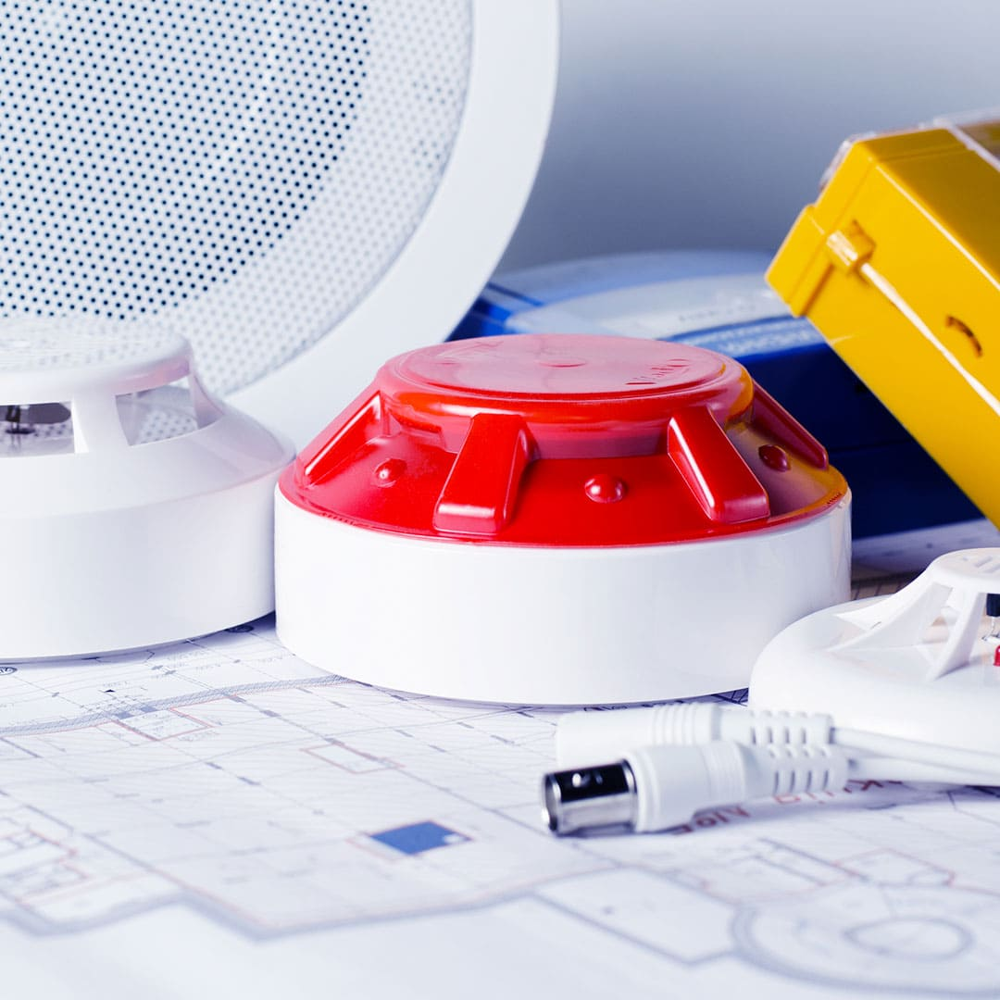

Julio 2024 - Tiempo de lectura: 5 min.
Sistemas de detección de incendios: una inversión que salva vidas
Los sistemas de detección de incendios son clave para la seguridad de un hogar o negocio. Estos sistemas detectan humo, calor o llamas y activan alarmas que permiten una evacuación rápida y segura. Con esto se reduce el riesgo
de lesiones o pérdidas humanas. Además, la detección temprana de un incendio puede minimizar los daños materiales; ya que los servicios de emergencia son alertados de inmediato.
Beneficios principales al elegir un sistema de detección
de incendio:
- Protección de vidas humanas.
- Minimización de daños materiales.
- Es obligatorio en la mayoría de establecimientos para cumplir con la normativa.
- Reducción de costos de seguros.
Consideraciones
al elegir un sistema de detección de incendio:
- Tipo de detectores: Humo, calor o combinados.
- Cobertura: Tamaño y distribución del espacio.
- Integración con otros sistemas.
- Mantenimiento y pruebas regulares
para su buen funcionamiento.
¿Qué tipos de sistemas de detección de incendio existen?
Detectores de humo:
Detectan las partículas de humo presentes en el aire. Existen dos tipos principales:
Ionización: Detectan las partículas de humo grandes.
Fotoeléctricos: Detectan las partículas
de humo pequeñas.
Detectores de calor:
Detectan el aumento anormal de la temperatura ambiente. Se utilizan comúnmente en áreas donde el humo puede no ser visible, como cocinas o garajes.
Detectores
de llamas:
Detectan la presencia de llamas abiertas a través de la luz infrarroja o ultravioleta. Se utilizan en áreas de alto riesgo de incendio, como almacenes de combustibles o refinerías.

Imagen ilustrativa
¿Cómo funciona un sistema de detección de incendios?
El funcionamiento de un sistema de detección de incendios se basa en la interacción de diversos componentes para lograr un objetivo principal: detectar un incendio en su fase inicial y alertar a las personas para su evacuación segura. El funcionamiento se divide en 5 pasos:
- Detección. Se busca humo, calor o llamas.
- Señalización. Cuando se detecta el incendio, se envía una señal al panel de control.
- Análisis. En el panel de control
se analiza si es un incendio real o no.
- Activación. Cuando se confirma el incendio se activa la alarma y se envían las señales correspondientes.
- Evacuación. Las personas son alertadas para tomar las medidas
de seguridad necesarias.
Los componentes principales de un sistema de detección de incendios son:
Detector de incendio: Sensores encargados de identificar la presencia de humo, calor o llamas. Existen diferentes
tipos de detectores, cada uno con su tecnología y sensibilidad específica. Se colocan de forma estratégica en todo el edificio, local o casa, cubriendo todas las áreas en donde haya riesgo potencial.
Panel de control: Es el cerebro del sistema, se encarga de recibir las señales de los detectores. Analiza la información recibida y determina si el incendio es real o no. Si se trata de un incendio real, se activan las alarmas y envía las señales
correspondientes a otros sistemas contra incendios (por ejemplo, rociadores automáticos, puertas cortafuegos, etc.).
Dispositivos de alarma: Sirenas, luces estroboscópicas u otros dispositivos que emiten señales
auditivas y visuales para alertar a las personas sobre el incendio.
Dispositivos de control: Puede incluir pulsadores manuales de alarma, estaciones de control de emergencia y otros dispositivos que permiten la
activación manual del sistema en caso de ser necesario.
Fuente de alimentación: Garantiza el funcionamiento continuo del sistema, incluso en caso de cortes de energía eléctrica. Por lo regular incluye baterías o
generadores de emergencia.
¿Qué tipos de detectores existen?
Existen diversos tipos de detectores de incendio, cada uno con tecnología y función específica para detectar diferentes elementos que indiquen un incendio. Los más comunes son:
1. Detectores de humo:
Detectores
de humo fotoeléctricos: Detectan partículas de humo pequeñas que se producen en incendios de combustión lenta (que inician en muebles o materiales eléctricos). Son ideales para áreas residenciales y habitaciones cerradas.
Detectores de humo iónicos: Detectan partículas de humo grandes que se producen en los incendios de combustión rápida (que inician en líquidos inflamables o papel). Son ideales para cocinas y áreas con riesgo de derrames de líquidos
inflamables.
Detectores de humo combinados: Integran ambas tecnologías, fotoeléctrica e iónica, para ofrecer una detección más completa de diferentes tipos de humo. Son adecuados para áreas que requieren una protección
contra incendios más versátil.
Detectores de humo por aspiración: Estos detectores aspiran aire a través de una tubería con orificios ubicados en diferentes puntos del área protegida. Son ideales para espacios amplios
o con techos altos, como almacenes, centros comerciales o naves industriales.
2. Detectores de calor:
Detectores de calor convencionales: Detectan el aumento anormal de la temperatura ambiente, por encima
de un umbral preestablecido. Son ideales para áreas donde el humo puede no ser visible, como cocinas, garajes o salas de máquinas.
Detectores de calor termovelocimétricos: Detectan el aumento de temperatura y miden la
velocidad a la que aumenta. Son más sensibles que los detectores convencionales y pueden detectar incendios en una etapa más temprana.
3. Detectores de llama:
Detectores de llama por infrarrojos (IR): Detectan
la presencia de llamas abiertas a través de la luz infrarroja que emiten. Son ideales para áreas con riesgo de incendios con llamas visibles, como refinerías, plantas petroquímicas o áreas de almacenamiento de combustibles.
Detectores de llama por ultravioleta (UV): Detectan la luz ultravioleta que emiten las llamas, incluso en condiciones de poca visibilidad o humo denso. Son ideales para áreas donde la detección por infrarrojos puede ser limitada,
como túneles, hangares o áreas con presencia de polvo o humo.
Detectores de llama combinados (IR/UV): Integran ambas tecnologías, infrarroja y ultravioleta, para ofrecer una detección más completa de llamas en diferentes
condiciones. Son adecuados para áreas que requieren una protección contra incendios de llamas más robusta.
4. Detectores de gases:
Detectores de monóxido de carbono (CO): Detectan la presencia de monóxido
de carbono (gas inodoro e incoloro) que puede ser mortal en altas concentraciones. Ideales para hogares, garajes y cualquier lugar donde haya riesgo de presencia de CO (calderas, estufas o chimeneas).
Detectores de gases
licuados de petróleo (GLP): Detectan la presencia de gases licuados de petróleo, como propano o butano, que se utilizan comúnmente en estufas, calentadores de agua y barbacoas. Ideales para cocinas, áreas de servicio y cualquier
lugar donde se almacenen o utilicen GLP.
Es importante seleccionar el tipo de detector adecuado para cada área en función del riesgo de incendio y las características del lugar.
Un sistema de detección de incendios
efectivo debe combinar diferentes tipos de detectores para garantizar una protección completa contra los diversos tipos de incendios que puedan surgir.
Recuerda que el mantenimiento regular de los detectores de incendios es crucial para asegurar su correcto funcionamiento. Un detector que no funciona correctamente puede poner en riesgo la seguridad de las personas en caso de incendio.